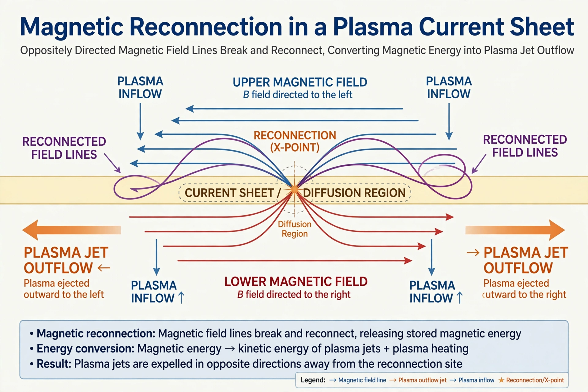

From Wikipedia, the free encyclopedia

Magnetic reconnection is a physical process occurring in electrically conducting plasmas, in which the magnetic topology is rearranged and magnetic energy is converted to kinetic energy, thermal energy, and particle acceleration. It takes place at the boundary of a plasma in which opposite-directed magnetic field lines meet in a thin current sheet: the field lines "break" and reconnect in a new configuration, releasing stored energy explosively.
In an ideal plasma the magnetic field is "frozen in" to the conducting fluid and field lines cannot change their connections. Reconnection requires a small region — the diffusion region — where resistivity or kinetic effects break the frozen-in condition. The classic Sweet–Parker model (proposed independently by Peter Sweet and Eugene Parker in the late 1950s) predicted reconnection far too slow to explain observed events; the Petschek model proposed a much faster configuration with standing shocks. Modern research, using particle-in-cell simulations and NASA's Magnetospheric Multiscale Mission (launched 2015), has confirmed that fast reconnection proceeds at roughly a tenth of the Alfvén speed and is mediated by collisionless effects in a tiny electron-scale diffusion region.
Reconnection powers solar flares and coronal mass ejections, the largest explosions in the solar system, releasing up to 1032 ergs in minutes. In Earth's magnetosphere, reconnection on the dayside merges the interplanetary magnetic field with the geomagnetic field, and reconnection in the magnetotail drives substorms and auroras, transferring solar-wind energy into the near-Earth environment. The process also occurs in laboratory plasmas, where uncontrolled reconnection ("sawtooth crashes" and disruptions) is a major challenge for magnetic-confinement fusion devices such as tokamaks, and is inferred in astrophysical jets, accretion discs and gamma-ray bursts.
See also: Plasma · Solar flare · Magnetosphere · Aurora